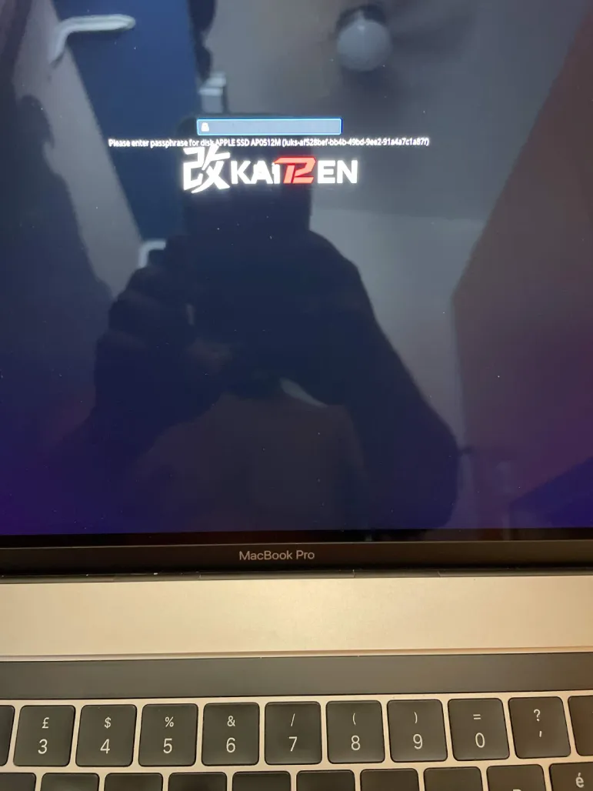

Enfant Terrible
Fedora rebuilt the initramfs, four T2 modules quietly disappeared and an encrypted MacBook was left with a passphrase prompt it could not type into.
Disk encryption has one fairly strict user-interface requirement: a keyboard.
That sounds manageable until the keyboard itself lives behind Apple's T2 and needs four out-of-tree modules before Linux can see it:
t2bce_dma -> t2bce_core -> t2bce_vhci -> t2hid
If those modules are available after the root filesystem has mounted, everything is fine. If the root filesystem is encrypted: meh!
KAIT2EN did not officially support drive encryption yet. We didn't care because we don't use it ourselves (should I say that publicly?).
We officially don't ship with issues#
Our guided installer already forced the T2 input stack into its transition initramfs. The installed system booted, the internal keyboard worked at the LUKS prompt and everybody went home happy.
Then @Salvo installed software, Fedora pulled updates and Dracut rebuilt the image. The next boot still displayed the passphrase prompt. But the keyboard was a goner.
This picture was wonderfully unhelpful. Thank you anyways:

So no t2bce_dma, no t2bce_core, no t2bce_vhci, no t2hid. Just no drivers.
So he was left with a Fedora that wouldn't boot and also he had no USB keyboard. If he had, it would be as simple as entering the password and drop this into terminal:
echo "force_drivers+=\" t2bce_dma t2bce_core t2bce_vhci t2hid\"" | sudo tee /etc/dracut.conf.d/t2linux-modules.conf
@Salvo had the brilliant idea of chroot with our Live USB, while I was still scratching my head and had to google if that would work at all. Because of my missing experience with drive encryption. But @Salvo then showed me it actually does. And to be fair: We have @4f1sh3r - 🔱 God of Install for that. Who was not available, because he had to do "real work and earn money".
So I was tempted to say "I don't know, I don't care, not my job". But well...
Anyways, after @Salvo chrooted and dropped the command everything was fine. He told Claude to look at the issue. And Claude generated a helper script that was going to reapply the workaround after every update and before shutdown. Understandable, but again a perfect example for:
there is a distinct difference in making broken things work and fixing things
Dracut my ass#
@Th0masL was the first to pin down the missing modules and propose a fix.
@4f1sh3r then found the long-term part of the problem: plain host-only Dracut
did not include our modules from /lib/modules/.../extra/, and every kernel
update runs Dracut again. Rebuilding the image once was therefore not a fix.
It was a bandaid until the next Fedora update.
The structural solution is a Dracut drop-in:
# Managed by scripts/fedora/rebuild-initramfs.sh
force_drivers+=" t2bce_dma t2bce_core t2bce_vhci t2hid "
force_drivers does two jobs. It puts the modules into every future initramfs
and adds rd.driver.pre entries so they load before udev and before the LUKS
prompt.
Enfant terrible#
@Th0masL came at the problem from a DevOps and SRE background and used Claude to help work through unfamiliar kernel territory. The first PR tried to make every failure impossible. Temporary images, free-space checks, module checks, image verification and test plumbing. All well-intentioned but it also turned one line of Dracut configuration into changes spread over several files.
Even worse, the final verification could stop the main KAIT2EN installer after the new initramfs had already been written. The suspend service and every app still waiting later in the installer would simply never be installed. Users would be left with half a setup and no useful explanation of what to do.
At that point the review became more expensive than writing the fix. My tempers were not exactly improved by an inbox filling with another revision every few minutes for days. I do like @Th0masL. He tried to help from the first second he joined our Discord. Opposite to me a very forgiving and patient person. I had to remind him several times to not use AI, just send logs and file an issue instead of PRing refactories for things that can be solved with three lines of code.
I closed the PR very impolitely short before @4f1sh3r was about to merge.
I did that because the PR was compromising the main installer in the first place. Second was that I feel a deep anger about AI fooling people and wasting our precious lifetime. I am not an AI hater. I use it myself where I find I can learn from it. But what happened here was that AI took over. One guy annoyed of PRing over and over again because we didn't accept. And the other guy tired of reviewing all those dozens of lines of slopped code. And the issue was obvious:
listing="$(lsinitrd "$INITRAMFS")"
for module in "${INPUT_MODULES[@]}"; do
[[ "$listing" == *"/$module.ko"* ]] ||
fail "the rebuilt initramfs for $KVER is missing $module"
Translated into plain text that means: "I don't know the context and I don't care!"
That is not a story about somebody being stupid for using AI. @Th0masL found the bug, reproduced it, prepared a fix and kept testing after a fairly direct review. Good intentions do matter. So does knowing when generated defensive code no longer fits the program around it.
So in the end it was 7 lines of code to fix the issue. And we spend days reviewing code. I lost my contenance again, being the enfant terrible.
7 lines of code#
The result went onto a test branch. @Th0masL pulled it and rebuilt his initramfs:
[kait2en] rebuilding initramfs for 7.1.7-200.fc44.x86_64
[kait2en] initramfs rebuilt
The image then contained all four modules and the corresponding early-load instructions:
t2bce_core.ko.xz
t2bce_dma.ko.xz
t2bce_vhci.ko.xz
t2hid.ko.xz
rd.driver.pre=t2bce_dma
rd.driver.pre=t2bce_core
rd.driver.pre=t2bce_vhci
rd.driver.pre=t2hid
Ten minutes after taking over, we had the small structural fix we needed. More importantly, @Th0masL had already confirmed that it built the intended image. He found the hole first, and without that report we would still be telling encrypted-disk users to find a USB keyboard.
And later that evening:
Salvo#2812 [CO] — 22:33
Tested the branch, rebuild completed clean. Verified with lsinitrd: t2bce_dma, t2bce_core, t2bce_vhci all present with rd.driver.pre entries. Rebooting to confirm keyboard/trackpad at LUKS now.
Confirmed working — rebuilt with the test branch, lsinitrd showed all t2bce modules included, rebooted and keyboard/trackpad respond correctly at the LUKS prompt now. Thanks for the fix! 🎉
Was I annoyed of AI slop? - Oh yes I was. But was @Th0masL right that there was an issue? Yup!